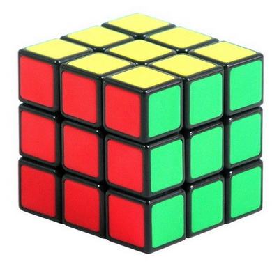

Układanie kostki 3x3x3 - filmy z YouTube

❶ Najprostsza metoda - żółtym kolorem u góry. Dwuczęściowy tutorial
❶.❶ Cz.1 Biała kolor i 1-szy poziom
❶.❷ Cz.2 Drugi poziom i układanie do końca całej kostki
❷ Żółtym kolorem u góry - precyzyjny pokaz
❸ Białym kolorem u góry - precyzyjny pokaz
❹ Metodą LBL - najlepsze tłumaczenie
❺ Poradnik Dżodżo. Metoda podstawowa-LBL
❻ Metoda LBL